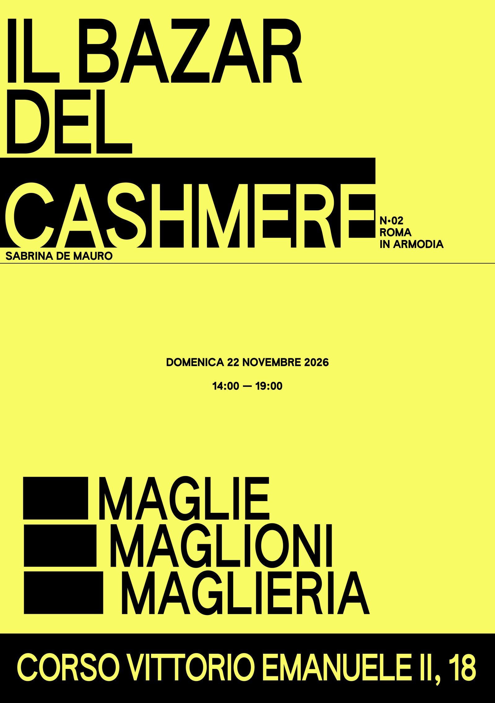

Il Bazar del Cashmere
Identité visuelle pour un marché itinérant de cachemire.

N°01 — Dimanche 8 novembre 2026

N°02 — Dimanche 22 novembre 2026
Le projet
Il Bazar del Cashmere est un marché itinérant de maille en cachemire, organisé par Sabrina De Mauro. J’en ai conçu l’identité visuelle. Comme le bazar se déplace, chaque rendez-vous a son numéro, sa date et sa couleur ; la structure typographique, elle, reste la même, pour qu’on le reconnaisse à chaque édition.
L’affiche est née pour avoir un impact agressif, presque punk : des lettres énormes et serrées, des blocs noirs pleins, des couleurs acides. Le nom occupe tout le haut ; Cashmere sort en négatif d’un bandeau noir, comme une étiquette. La date est placée au centre, en petit, entourée d’une bande vide : l’affiche recrée ainsi l’effet d’une enveloppe, avec l’adresse écrite au milieu. La mention « maglie, maglioni, maglieria » (hauts, pulls, maille) est écrite et appuyée ainsi pour rappeler la camionnette du rémouleur, l’arrotino, qui passe dans les rues italiennes en annonçant à voix haute ce qu’il propose. L’adresse ferme l’affiche dans un bandeau plein.
Les affiches circulent surtout sur WhatsApp, auprès d’un public très varié : les informations sont donc réduites et la hiérarchie nette, lisible même sur l’écran d’un téléphone.